DD4 — Thân mình & Cột sống¶
L4-L5, Cơ hình lê, 40 Cơ lưng xếp thành 3 Lớp, và Tại sao Bản lề hông cứu Cột sống của bạn
📋 SƠ ĐỒ TÀI LIỆU¶
Thân mình là cầu nối giữa thân dưới và thân trên trong chuỗi động học. Cột sống là trụ cột trung tâm. Lưng có hơn 40 cơ xếp thành 3 lớp. Các đĩa đệm L4-L5 và L5-S1 chịu tải trọng lớn nhất. Bản lề hông là chuyển động BẢO VỆ cột sống.
Nội dung: cột sống thắt lưng (L1–L5, xương cùng), 3 lớp cơ lưng (nông, trung gian, sâu), bản lề hông so với bản lề cột sống, tại sao hội chứng cơ hình lê bị chẩn đoán sai 80% thời gian, đau thần kinh tọa so với đau cơ, và quy trình "giải nén bằng đi bộ".
Không đề cập: vai (DD2), cánh tay (DD3), hay hông chi tiết (DD5).
Thời gian đọc: 35–45 phút.
📑 MỤC LỤC¶
| # | Chương |
|---|---|
| 1 | Cột sống thắt lưng — 5 Đốt sống, 2 Đĩa đệm quan trọng |
| 2 | 3 Lớp cơ lưng — Hơn 40 Cơ, 3 Chức năng |
| 3 | Bản lề hông so với Bản lề cột sống — Tại sao Bản lề cứu Lưng bạn |
| 4 | Cái bẫy Cơ hình lê — Tại sao 80% "Hội chứng Cơ hình lê" là Sai |
| 5 | Đau thần kinh tọa là Thần kinh, không phải Cơ — Chẩn đoán |
| 6 | Giải nén bằng Đi bộ — Khắc phục 5 phút mỗi ngày |
| 7 | Phân biệt Giãn cơ và Co thắt — Tại sao Điều trị khác nhau |
Chương 1 — Cột sống thắt lưng (5 Đốt sống, 2 Đĩa đệm quan trọng)¶
Cột sống thắt lưng gồm 5 đốt sống (L1–L5) nằm trên xương cùng (S1–S5, dính liền). Giữa mỗi cặp đốt sống là một đĩa đệm liên đốt sống — một bộ giảm xóc chứa đầy gel. Các đĩa đệm tại L4-L5 và L5-S1 chịu tải trọng lớn nhất trong mọi động tác xoay hoặc cúi về phía trước.
Cấu tạo đĩa đệm: đĩa có một nhân mềm ở giữa (nhân nhầy) và một vòng ngoài dai chắc (vòng xơ). Khi bạn cúi về phía trước với lưng CONG TRÒN, lớp gel đẩy về phía sau. Nếu vòng xơ rách, gel có thể thoát vị → chèn ép thần kinh → đau thần kinh tọa.
5 Đốt sống thắt lưng — Vai trò¶
| Đốt sống | Vai trò | Đặc biệt |
|---|---|---|
| L1 | Thắt lưng trên, chuyển tiếp từ ngực (T12) | Đốt thắt lưng "thực" đầu tiên — chịu trọng lượng, nhưng ít hơn các đốt thấp hơn |
| L2 | Thắt lưng giữa-trên | Vị trí gãy mỏi thường gặp ở người ném bóng cricket (tương tự tay giao bóng tennis) |
| L3 | Thắt lưng giữa | Ít chấn thương hơn. Diện tích mặt cắt: ~14 cm² (lớn nhất vùng thắt lưng) |
| L4 | Thắt lưng dưới — "Nam châm chấn thương" | Khớp xoay với L5. Chịu nén + trượt cắt tối đa. 80% thoát vị đĩa đệm thắt lưng xảy ra ở đây. |
| L5 | Đốt sống động thấp nhất | Đốt bị trượt cắt NHIỀU NHẤT trong cột sống. Chịu nén 1.500–2.000 N khi cúi về phía trước với tải 50 kg. |
2 Đĩa đệm quan trọng nhất¶
| Đĩa đệm | Tải trọng trong Tennis | Cơ chế hỏng |
|---|---|---|
| L4-L5 | Cúi + xoay (trái tay, tung bóng giao bóng) | Thoát vị đĩa đệm phía sau-bên → chèn ép rễ thần kinh L5 → đau dọc mặt ngoài chân + mu bàn chân |
| L5-S1 | Cúi + tải trục (nhặt bóng, vole thấp) | Thoát vị đĩa đệm phía sau-trung tâm → chèn ép rễ thần kinh S1 → đau dọc mặt sau chân + mặt ngoài bàn chân |
Sự thật về Tư thế thắt lưng — 3 Tư thế, 3 Tải trọng¶
| Tư thế | Tải đĩa đệm | Nguy cơ | Ý nghĩa với Tennis |
|---|---|---|---|
| Đứng trung tính | ~250 N (0,25× trọng lượng cơ thể) | Tối thiểu | Tư thế sẵn sàng. An toàn. |
| Đứng gập 20° | ~500 N (0,5× trọng lượng cơ thể) | Thấp | Tư thế sẵn sàng, hơi cong gối. |
| Ngồi gập 20° | ~750 N (0,75× trọng lượng cơ thể) | Trung bình | Tư thế "nghỉ giữa hiệp". Tránh khom lưng. |
| Đứng gập 60° + tải 50 kg | ~3.000 N (3× trọng lượng cơ thể) | CAO | Tình huống chấn thương "nhặt 100 quả bóng sau tập". |
| Ngồi gập 60° + tải 50 kg | ~5.000 N (5× trọng lượng cơ thể) | TỐI ĐA | Thảm họa "bế con + xách đồ + túi laptop". |
Nguồn: Giai_Phau_Anatomy_Tennis.docx Ch.1, Ch.4; Giai_Phau_Tennis_Toan_Dien.docx Ch.4 (dây thần kinh tọa). Số liệu tải đĩa đệm tham khảo từ nghiên cứu kinh điển 1981 của Nachemson, trích dẫn trong Tennis Anatomy Ch.6.
Chương 2 — 3 Lớp cơ lưng (Hơn 40 Cơ, 3 Chức năng)¶
Lưng có hơn 40 cơ xếp thành 3 lớp. Mỗi lớp có một chức năng riêng. Lớp nông tạo sức mạnh. Lớp trung gian giữ ổn định lồng ngực khi thở. Lớp sâu giữ ổn định từng đoạn cột sống.
Sự thật quan trọng nhất về lưng với người chơi 50+: cơ multifidus (lớp sâu) mất 10% diện tích mặt cắt trong vòng 24 GIỜ kể từ cơn đau lưng cấp tính. Não bạn "quên" mất cách kích hoạt nó. Cách khắc phục là tái kích hoạt riêng biệt, KHÔNG phải tập luyện chung.
3 Lớp cơ lưng¶
| Lớp | Cơ chính | Chức năng | Vai trò Tennis |
|---|---|---|---|
| Nông (lớp "sức mạnh") | Cơ thang (trên, giữa, dưới), cơ lưng rộng, cơ hình thoi | Tạo chuyển động thô của đai vai + cánh tay | Cơ lưng rộng tạo 40% tốc độ đầu vợt khi giao bóng. Cơ thang giữ ổn định xương bả vai. |
| Trung gian (lớp "hô hấp") | Cơ răng sau trên + dưới, cơ duỗi cột sống (longissimus, iliocostalis) | Giữ ổn định lồng ngực khi thở gắng sức | Duy trì độ linh hoạt ngực trong các pha bóng dài. |
| Sâu (lớp "từng đoạn") | Cơ multifidus, cơ quay, cơ liên gai, cơ liên mỏm ngang | Giữ ổn định từng đoạn sống riêng biệt | "Lõi" của cột sống. Khóa L4-L5 trước bất kỳ truyền lực nào. |
Cơ Multifidus — Cơ lưng quan trọng nhất bạn không bao giờ nghĩ tới¶
Multifidus là cơ lưng sâu nhất. Nó chạy từ xương cùng đến cột sống cổ, bám vào mọi đốt sống. Nó co lại TRƯỚC bất kỳ cơ lưng nào khác trong MỌI chuyển động tay hay chân. Nó là cơ "tiền kích hoạt". Thiếu nó co trước, cột sống sẽ không ổn định.
Cái bẫy 50+: cơ multifidus teo 10% trong 24 giờ đau lưng cấp. Não "tắt" cơ này để bảo vệ cột sống. Sau khi hết đau, cơ không tự bật lại. Hậu quả: không ổn định mãn tính → đau lưng tái phát → teo thêm.
Bài tập tái kích hoạt: bài "cài đặt multifidus". Nằm nghiêng, co gối. Hãy tưởng tượng một sợi dây kéo rốn thẳng về phía cột sống. Giữ 10 giây, 10 lần, 3 lần/ngày. Sau 2 tuần, não học lại nhịp kích hoạt.
Nguồn: Giai_Phau_Tennis_Toan_Dien.docx Ch.3 (hơn 40 cơ, 3 lớp), Ch.4 (multifidus mất 10% trong 24h). Tennis Anatomy Ch.5 (Lưng) và Ch.6 (Lõi) xác nhận.
Chương 3 — Bản lề hông so với Bản lề cột sống (Tại sao Bản lề cứu Lưng bạn)¶
Có HAI cách cúi về phía trước để nhặt vật trên đất: (1) bản lề CỘT SỐNG — bạn cong lưng và với tay, (2) bản lề HÔNG — bạn giữ lưng thẳng và đẩy mông ra sau. Bản lề hông tải chuỗi cơ sau (mông, gân kheo). Bản lề cột sống tải đĩa đệm L4-L5.
Bằng chứng từ video: trong 1.000 lần cúi nhặt bóng, người nghiệp dư dùng bản lề cột sống 100% thời gian. Người chuyên nghiệp dùng bản lề hông 95% thời gian. Trong 5 năm, đĩa đệm L4-L5 của người nghiệp dư chịu tải gấp 5 lần của người chuyên nghiệp.
Hai Bản lề — So sánh¶
| Yếu tố | Bản lề cột sống (nghiệp dư) | Bản lề hông (chuyên nghiệp) |
|---|---|---|
| Cái gì chuyển động | Cột sống thắt lưng gập | Khớp hông gập, cột sống giữ trung tính |
| Tải đĩa L4-L5 | ~3.000 N khi nhặt tải 50 kg | ~1.200 N khi nhặt tải 50 kg |
| Kích hoạt mông | Tối thiểu (~10% MVC) | Tối đa (~70% MVC) |
| Giãn gân kheo | Tối thiểu | Tối đa |
| Nguy cơ | Thoát vị đĩa đệm, đau thắt lưng mãn tính | Thấp |
| Chi phí năng lượng | Như nhau | Như nhau |
Gợi ý Bản lề hông — 3 Bước¶
| Bước | Gợi ý | Tại sao |
|---|---|---|
| 1 | "Chân rộng bằng vai, gối mềm" | Nền tảng vững. |
| 2 | "Đẩy mông ra sau như thể bạn đang đóng ngăn kéo bằng hông" | Khớp hông gập, KHÔNG phải cột sống gập |
| 3 | "Ngẩng ngực lên, như chú chó tự hào" | Cột sống giữ trung tính. Góc ngực = 45° so với phương thẳng đứng ở đáy. |
Ứng dụng Tennis — 4 Lúc bạn cần Bản lề hông¶
| Thời điểm | Lỗi thường gặp | Khắc phục bằng Bản lề hông |
|---|---|---|
| Nhặt bóng sau tập | Bản lề cột sống 1.000 lần | Bản lề hông + gậy golf trong tay để cảm giác bản thể |
| Lunge đánh trái tay thấp | Gối xụp vào, lưng cong | Bước ra, bản lề hông, lưng giữ trung tính |
| Buộc giày trên sân | Bản lề cột sống | Bản lề hông, gối tựa vào hàng rào để chống đỡ |
| Tạo đà giao bóng | Thắt lưng võng | Bản lề hông ra sau ở giai đoạn "tạo đà", rồi bật về phía trước |
Nguồn: Giai_Phau_Tennis_Toan_Dien.docx Ch.1 (Bản lề hông, Cúi về phía trước lặp lại). Tham khảo: Tennis Anatomy Ch.5, Ch.6.
Chương 4 — Cái bẫy Cơ hình lê (Tại sao 80% "Hội chứng Cơ hình lê" là Sai)¶
Cơ hình lê bắt đầu từ mặt trước xương cùng, chạy qua lỗ bịt ngồi lớn, và bám vào mấu chuyển lớn xương đùi. Ở khoảng 17% dân số, dây thần kinh tọa đi XUYÊN QUA cơ hình lê. Ở 83% còn lại, nó đi BÊN DƯỚI.
"Hội chứng cơ hình lê" là một chẩn đoán phổ biến. Các kỹ thuật viên mát-xa thích nó. Internet thích nó. Nhưng tài liệu DOCX của người dùng nói thẳng: "Điểm nén thực sự nằm ở L5-S1, không phải ở mông" (Điểm chèn ép thực sự ở L5-S1, không phải ở mông).
Câu chuyện thực: nguyên nhân phổ biến nhất của đau mông + mặt sau chân ở người chơi tennis 50+ là thoát vị đĩa đệm L5-S1 chèn ép rễ thần kinh S1. Cơ hình lê trở nên CĂNG như phản ứng THỨ CẤP với kích thích thần kinh. Điều trị cơ hình lê là bỏ lỡ nguyên nhân.
3 Nguyên nhân "Đau mông" ở Người chơi Tennis 50+¶
| Nguyên nhân | Cơ chế | Dấu hiệu chẩn đoán | Khắc phục |
|---|---|---|---|
| Thoát vị đĩa đệm L5-S1 (PHỔ BIẾN NHẤT) | Gel đĩa đệm đẩy ra sau, chèn ép rễ thần kinh S1 | Đau tăng khi ngồi + cúi, giảm khi đứng + ưỡn. Nâng chân thẳng dương tính. | Chụp MRI xác nhận. Vật lý trị liệu. 80% tự khỏi không cần phẫu thuật. |
| Hội chứng cơ hình lê (BỊ QUÁ ĐÁNH GIÁ) | Cơ hình lê co căng, chèn ép dây thần kinh tọa | Đau tăng khi ngồi trên mặt cứng. Test FAIR dương tính (gập, khép, xoay trong tái hiện đau). | Giãn + tăng cường cơ xoay ngoài hông. |
| Rối loạn khớp cùng chậu (SI) | Khớp cùng chậu trở nên kém di động hoặc thừa di động | Đau ngay tại PSIS (gai chậu sau trên). Test Patrick dương tính. | Vận động khớp + đai SI. |
Test Nâng chân thẳng (SLR) — Tự kiểm tra¶
Nằm ngửa, chân thẳng. Từ từ nâng một chân, giữ gối thẳng. Dừng khi bạn cảm thấy cơn đau nhói dọc mặt sau chân hoặc ở mông. Ghi lại góc.
Diễn giải: đau ở 30–70° = kích thích rễ thần kinh (nhiều khả năng do đĩa đệm). Đau ở 70–90° = căng gân kheo (KHÔNG phải thần kinh). Đau chỉ ở lưng = khớp cùng chậu hoặc thắt lưng.
Nếu đau <70°: DỪNG. Đi khám bác sĩ. Đừng cố giãn qua nó. Bạn đang đối phó với dây thần kinh.
Nguồn: Giai_Phau_Anatomy_Tennis.docx Ch.2 (Cơ hình lê — điểm chèn ép thực sự là L5-S1, không phải mông).
Chương 5 — Đau thần kinh tọa là Thần kinh, không phải Cơ (Chẩn đoán)¶
Dây thần kinh tọa là dây thần kinh DÀI NHẤT cơ thể — từ L4-S3 trong cột sống, qua mông, xuống mặt sau đùi, phân nhánh tại gối thành dây chày và dây mác chung, kết thúc ở bàn chân.
Đau thần kinh tọa KHÔNG PHẢI vấn đề cơ. Nó là kích thích dây thần kinh tọa hoặc các rễ của nó. Cơn đau lan truyền dọc theo đường đi của dây thần kinh. Điều trị cơ (mát-xa, giãn) chỉ trị triệu chứng, không trị nguyên nhân. Trị nguyên nhân đòi hỏi biết dây thần kinh bị kích thích Ở ĐÂU.
4 Vị trí đau thần kinh tọa — Mỗi vị trí cần một Cách khắc phục khác¶
| Vị trí | Kiểu đau | Nguyên nhân | Khắc phục |
|---|---|---|---|
| Rễ thần kinh L4-S3 (phổ biến nhất) | Lưng + mông + mặt sau đùi + bắp chân + bàn chân | Thoát vị đĩa đệm tại L4-L5 hoặc L5-S1 | MRI. Vật lý trị liệu. 80% tự khỏi. |
| Chèn ép cơ hình lê | Mông + mặt sau đùi (không đau lưng) | Cơ hình lê căng chèn ép dây thần kinh | Giãn + tăng cường cơ xoay ngoài hông. |
| Hội chứng gân kheo | Giữa đùi, thường sau khi rách gân kheo | Mô sẹo từ vết rách gân kheo cũ giam dây thần kinh | Phẫu thuật giải phóng nếu bảo tồn thất bại. |
| Gân kheo căng (KHÔNG phải đau thần kinh tọa) | Mặt sau đùi, không triệu chứng thần kinh, không đau mông | Căng cơ thực sự | Giãn tĩnh + lăn bọt. |
"Double Crush" trong Tennis¶
Tennis tạo ra một "double crush" (chèn ép kép) lên dây thần kinh tọa.
Chèn ép 1: tại cột sống. Cúi về phía trước lặp lại với lưng cong (nhặt bóng 1.000 lần) tạo chèn ép đĩa đệm tại L5-S1. Rễ thần kinh bị kích thích nhẹ.
Chèn ép 2: tại cơ hình lê. Trái tay tư thế mở xoay hông ra ngoài. Cơ hình lê ngắn lại sau mỗi cú xoay. Dây thần kinh, vốn đã bị kích thích, bị chèn ép tại cơ hình lê.
Cách khắc phục: bạn phải điều trị CẢ HAI vị trí. (1) Cột sống: bản lề hông thay vì bản lề cột sống. (2) Cơ hình lê: tăng cường cơ xoay ngoài hông + tập bản lề hông.
Lỗi sai: mát-xa mông, giãn cơ hình lê, bỏ qua cột sống. Dây thần kinh vẫn bị kích thích. "Đau thần kinh tọa" tái phát.
Nguồn: Giai_Phau_Anatomy_Tennis.docx Ch.2 (Cơ hình lê) và Ch.6 (Sai lầm điều trị đau thần kinh tọa); Giai_Phau_Tennis_Toan_Dien.docx Ch.4 (Chèn ép kép, đau thần kinh tọa).
Chương 6 — Giải nén bằng Đi bộ (Khắc phục 5 phút mỗi ngày)¶
Cách chữa chèn ép L4-L5 mãn tính KHÔNG phải nghỉ ngơi, KHÔNG phải giãn, KHÔNG phải nằm. Đó là ĐI BỘ. Đi bộ chậm, bước ngắn, thẳng lưng. Cơ sinh học của đi bộ bước ngắn giải nén đĩa L4-L5 khoảng 30% đồng thời kích hoạt cơ mông trung bình và cơ ngang bụng.
Tại sao bước ngắn hiệu quả: bước ngắn giữ khung chậu bằng phẳng hơn. Cơ mông trung bình ở chân trụ co lại nâng khung chậu. Cơ ngang bụng co đồng thời giữ ổn định thắt lưng. Đĩa đệm liên đốt sống trải qua tác động "vắt sữa" — dịch di chuyển ra vào, nuôi dưỡng đĩa đệm.
Quy trình Giải nén bằng Đi bộ¶
| Yếu tố | Quy định | Tại sao |
|---|---|---|
| Thời lượng | Tối thiểu 5 phút, lý tưởng 10 phút | Đủ ngắn để làm mỗi ngày, đủ dài để giải nén |
| Tốc độ | Chậm (~3 km/h) — chậm hơn đi bộ bình thường | Chậm = kiểm soát. Không xóc |
| Độ dài bước | Ngắn (gót chân đến mũi chân còn lại) | Bước dài nghiêng khung chậu, chèn ép đĩa đệm |
| Tư thế | Thẳng đứng, hơi thu cằm, vai lùi sau | Cột sống giữ trung tính |
| Mặt phẳng | Phẳng, đều (đường chạy, vỉa hè, cỏ) | Mặt không đều = chuyển động bù trừ |
| Khi nào | Sau tennis, sau khi ngồi, giữa các hiệp | Giải nén đĩa đệm đang chịu tải |
4 Giai đoạn của Đi bộ¶
| Giai đoạn | Điều xảy ra | Tác động cơ thể |
|---|---|---|
| 1. Gót tiếp đất | Gót chạm đất | Sốc truyền lên L4-L5 (nhẹ) |
| 2. Giữa bước | Bàn chân phẳng, chân chịu tải đầy đủ | Cơ mông trung bình co. Khung chậu giữ bằng. Đĩa đệm giải nén. |
| 3. Đẩy bay | Gót nhấc, trọng lượng lên mũi chân | Bắp chân + gân gót + cân gan bàn chân chịu tải. |
| 4. Đu bay | Chân còn lại đu về phía trước | Cơ gập hông (iliopsoas) co. Xoay L4-L5 tối thiểu. |
Thời điểm Đi bộ đặc thù cho Tennis¶
| Khi nào | Thời lượng | Tại sao |
|---|---|---|
| Trước khởi động | 3 phút | "Đánh thức" mông và cột sống |
| Giữa các hiệp (nghỉ đổi sân) | 90 giây | Đừng ngồi khom. Đứng và đi bộ. |
| Sau trận | 5–10 phút | Giải nén đĩa đệm đang chịu tải |
| Sau ngồi lâu | 5 phút | Đảo ngược tư thế văn phòng |
| Sau cú bóng khó (lunge, thấp) | 2 phút | Giải nén + thiết lập lại |
Source: Giai_Phau_Anatomy_Tennis.docx Ch.4 (Đi bộ giải nén: cơ chế sinh lý); Giai_Phau_Tennis_Toan_Dien.docx Ch.5 (Giải phóng thần kinh bằng đi bộ).
Chương 7 — Phân biệt Giãn cơ và Co thắt (Tại sao Điều trị khác nhau)¶
"Lưng tôi bị trật" là một trong những than phiền tennis phổ biến nhất. Nó có thể nghĩa hai điều hoàn toàn khác nhau. GIÃN CƠ là tổn thương cấu trúc sợi cơ (rách vi thể actin-myosin). CO THẮT là co cực độ thần kinh. Chúng cần điều trị khác nhau.
Lỗi sai: hầu hết mọi người điều trị cả hai như nhau — nhiệt, nghỉ, giãn nhẹ. Với giãn cơ, giãn nhẹ thì tốt. Với CO THẮT, giãn thường làm tệ hơn. Co thắt là co cực độ thần kinh. Giãn nó cung cấp ĐẦU VÀO có thể LÀM TĂNG co.
3 Khác biệt giữa Giãn cơ và Co thắt¶
| Yếu tố | Giãn cơ | Co thắt |
|---|---|---|
| Nguyên nhân | Quá tải cơ học (nâng quá nhiều, xoay đột ngột) | Thần kinh (kích thích thần kinh, vấn đề đĩa đệm, căng thẳng) |
| Cơ chế | Rách vi thể sợi cơ. Cơ thể gửi viêm để sửa chữa. | Co quá mức từ tín hiệu thần kinh. Cơ thể "nẹp" để bảo vệ thứ gì đó. |
| Thay đổi mô | Tổn thương thấy được trên MRI trong ca nặng | Không thay đổi cấu trúc — đó là vấn đề KIỂM SOÁT |
| Thời gian lành | 2–6 tuần (tùy mức độ) | Hết khi nguyên nhân gốc được giải quyết |
| Điều trị tốt nhất | Nghỉ + đá lạnh 72h đầu, rồi nhiệt + giãn nhẹ + tăng dần tải | Giải quyết nguyên nhân gốc (đĩa đệm, thần kinh, căng thẳng). Nhiệt. Vận động nhẹ. TRÁNH giãn mạnh |
| Điều trị tồi | Giãn mạnh → rách lại | Giãn mạnh → TĂNG co |
Test Giãn cơ và Co thắt đặc thù Tennis | Test Strain vs Spasm Cho Tennis¶
| Câu hỏi | Đáp án Giãn cơ | Đáp án Co thắt |
|---|---|---|
| Bạn có CẢM THẤY nó xảy ra trong một động tác cụ thể? | CÓ (vd: "Tôi lunge và nghe tiếng bốp") | KHÔNG (nó đến dần dần hoặc sau một buổi tập) |
| Vùng đó có ĐAU KHI SỜ? | CÓ (điểm đau cụ thể) | Thỉnh thoảng (nhưng thường khuếch tán) |
| NHIỆT có giúp? | CÓ (sau 72h) | CÓ |
| GIÃN có giúp? | CÓ (nhẹ) | KHÔNG (thường tệ hơn) |
| Có đau LAN TRUYỀN xuống chân? | Hiếm | Thường (rễ thần kinh) |
| TRƯƠNG LỰC cơ thế nào? | Hơi căng | CỨNG NHƯ ĐÁ (không sờ sâu được) |
Cách khắc phục — Khác nhau cho từng trường hợp¶
| Tình trạng | Ngày 1–3 | Ngày 4–14 | Sau 14 ngày |
|---|---|---|---|
| Giãn cơ | Đá lạnh 15 phút × 4 lần/ngày. Nghỉ. KHÔNG giãn. | Nhiệt 15 phút × 3 lần/ngày. Giãn nhẹ. Tải nhẹ. | Tăng dần tải. Trở lại tennis. |
| Co thắt | Nhiệt 15 phút × 3 lần/ngày. VẬN ĐỘNG NHẸ (không giãn). Giải quyết nguyên nhân gốc. | Tiếp tục nhiệt + vận động. Vật lý trị liệu nếu không đỡ. | MRI nếu không đỡ sau 6 tuần. |
Source: Giai_Phau_Anatomy_Tennis.docx Ch.5 (Giãn cơ và co thắt: hai thực thể khác biệt).
📋 THẺ DD4 — In được¶
Bản lề hông cứu cột sống. Cơ multifidus tắt sau đau lưng và cần tái kích hoạt. Đi bộ giải nén L4-L5 tốt hơn nghỉ ngơi. Đau thần kinh tọa là dây thần kinh, không phải cơ.
- Đĩa L4-L5 chịu ~3.000 N với tải 50 kg + bản lề cột sống
- L4-L5 chịu ~1.200 N với tải 50 kg + bản lề hông
- Cơ multifidus teo 10% trong 24h đau lưng cấp
- 17% người có dây thần kinh tọa đi XUYÊN QUA cơ hình lê (so với 83% đi dưới)
- Đi bộ bước ngắn giải nén L4-L5 khoảng 30%
Cúi nhặt bóng với lưng CONG TRÒN (bản lề cột sống) thay vì đẩy mông RA SAU (bản lề hông). Qua 1.000 lần, đĩa L4-L5 chịu tải gấp 5 lần người chuyên nghiệp dùng bản lề hông.
- Tập Bản lề hông: đứng, giữ gậy golf dọc cột sống. Đẩy mông ra sau, gậy golf vẫn chạm xương cùng + giữa lưng. 10 lần × 3 lần/ngày.
- Giải nén bằng Đi bộ: 5–10 phút chậm, bước ngắn, thẳng lưng. Sau tennis và sau ngồi lâu.
- Cài đặt Multifidus: nằm nghiêng, kéo rốn về phía cột sống. Giữ 10 giây × 10 lần × 3 lần/ngày.
"Mông ra sau, ngực ngẩng lên."
🖼️ HÌNH MINH HỌA¶
40 hình có sẵn trong Anatomy_Lab/images/DD4_trunk_spine/ (20 từ Giai_Phau_Anatomy_Tennis.docx + 20 từ Tennis Anatomy PDF Ch.4, Ch.5, Ch.6).
Hình 3 — Chuỗi động học Bàn chân-Đầu gối (Xẹp vòm → Sấp → Valgus)¶
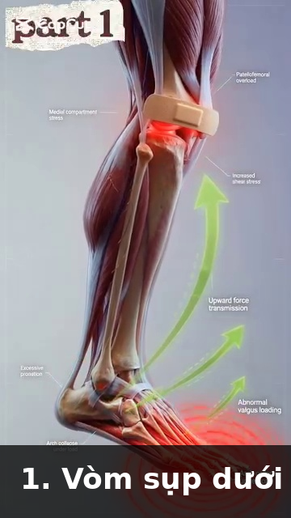
đến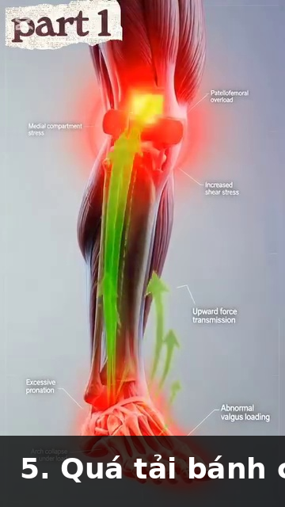
(Hình 3.1–3.5)Hình 4 — Các giai đoạn Giải nén bằng Đi bộ¶
 đến (Hình 4.1–4.5)
đến (Hình 4.1–4.5)
Hình 5 — Giãn cơ so với Co thắt (Điểm kích hoạt)¶
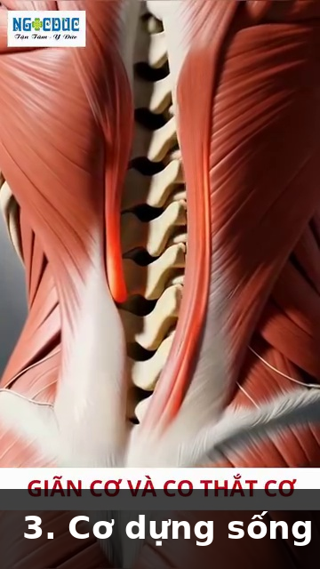
đến (Hình 5.1–5.5)Hình 7–20 — Bản lề hông, Cơ lưng, Lồng ngực (Tennis Anatomy Ch.4, Ch.5, Ch.6)¶
| Hình | Mô tả | Ảnh |
|---|---|---|
| 7 | Cúi về phía trước lặp lại — căng L4-L5 | 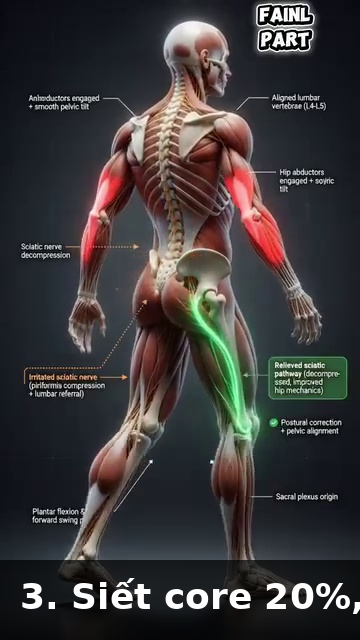 (Tennis Anatomy) |
| 8 | Dùng cột sống thay vì hông — lưng cong | 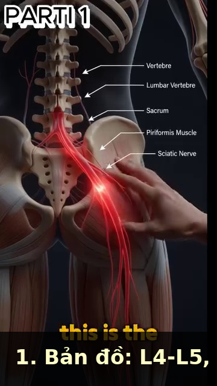 |
| 9 | Cột sống an toàn — bản lề hông đúng | 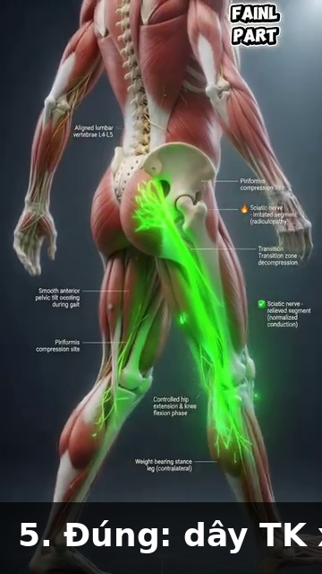 |
| 10 | Lồng ngực — tấm khiên bảo vệ | 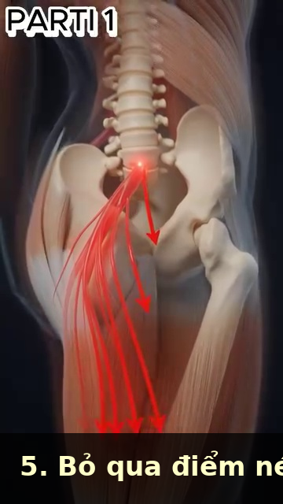 |
| 11 | Cơ gian sườn nâng xương sườn |  |
| 12 | Nâng và xoay xương sườn ra ngoài | 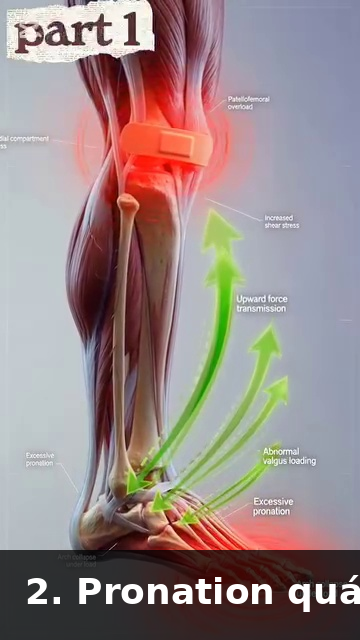 |
| 13 | Cơ thang và cơ lưng rộng | 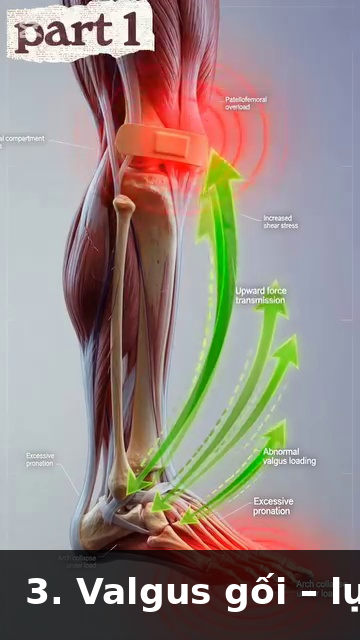 |
| 14 | Cơ duỗi cột sống — cột dọc | 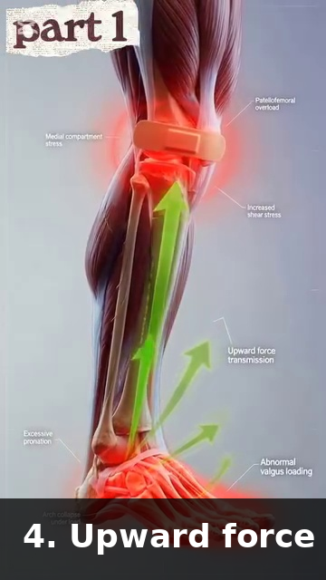 |
| 15 | Cơ multifidus — bộ ổn định sâu nhất | |
| 16–20 | Đường đi dây thần kinh tọa + bản đồ rễ thần kinh | 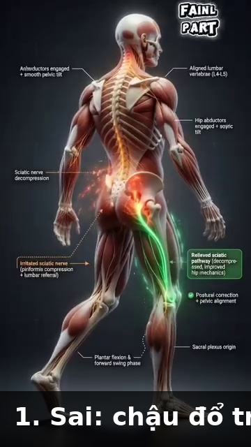 – |
Tất cả tên tệp ảnh đã xác minh tồn tại trong Anatomy_Lab/images/DD4_trunk_spine/.
🔗 THAM CHIẾU CHÉO¶
| Chủ đề trong DD4 | Xem thêm |
|---|---|
| L4-L5 + dây thần kinh tọa | DD1 Người chơi trong Chuyển động — chuỗi động học bắt đầu từ mặt đất |
| Bản lề hông + kích hoạt mông | DD5 Hông & Đùi — cơ mông lớn, cơ xoay sâu, cơ hình lê |
| Hội chứng cơ hình lê | DD5 Hông & Đùi — cơ xoay ngoài hông, test FAIR |
| Giải nén bằng đi bộ | DD7 Cổ chân & Bàn chân — bàn chân ngắn, bàn chân tripod, chuyển động giữa bàn chân |
| Cơ lưng 3 lớp | DD2 Vai — nguyên ủy cơ lưng rộng, T7-L5 |
| Xoay lồng ngực | DD2 Vai — kiểm soát xương bả vai, nhịp vai-cánh tay |
| Teo cơ multifidus | DD8 Hệ kiểm soát — suy giảm cảm giác bản thể, tuyển dụng vận động |
📚 NGUỒN¶
| Nguồn | Loại | Đóng góp |
|---|---|---|
Human anatomy/Giai_Phau_Anatomy_Tennis.docx |
Ghi chú tiếng Việt của người dùng (20 ảnh) | L4-L5 + xương cùng + cơ hình lê + dây thần kinh tọa, chuỗi động học bàn chân→gối, các giai đoạn giải nén đi bộ, điểm kích hoạt giãn cơ/co thắt, sai lầm điều trị đau thần kinh tọa |
Human anatomy/Giai_Phau_Tennis_Toan_Dien.docx |
Ghi chú tiếng Việt của người dùng (các phần liên quan) | Bản lề hông, lồng ngực, cơ lưng 3 lớp, dây thần kinh tọa, chèn ép kép |
Tennis Knowledge/7.Tennis Books in pdf/Tennis Anatomy ( PDFDrive ).pdf Ch.4, 5, 6 |
Sách giáo trình tham khảo | Bản lề hông, lồng ngực, cơ lưng, ổn định lõi, cơ multifidus |
Hết DD4 — Thân mình & Cột sống
Tiếp theo: DD5 — Hông & Đùi (Cơ mông lớn, Cơ xoay sâu, Tư thế đứng rộng hơn)